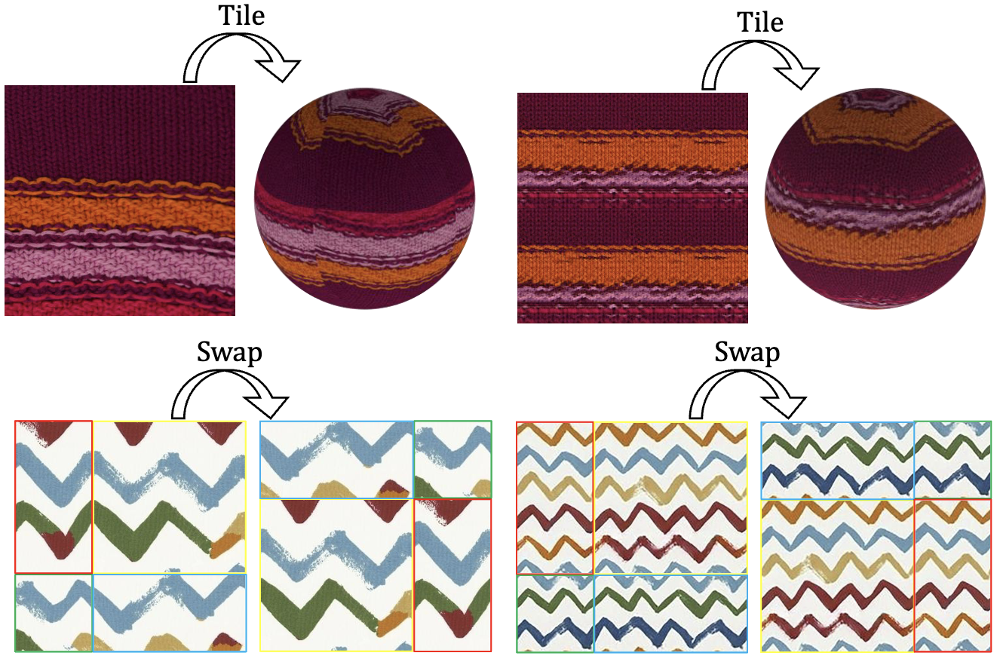
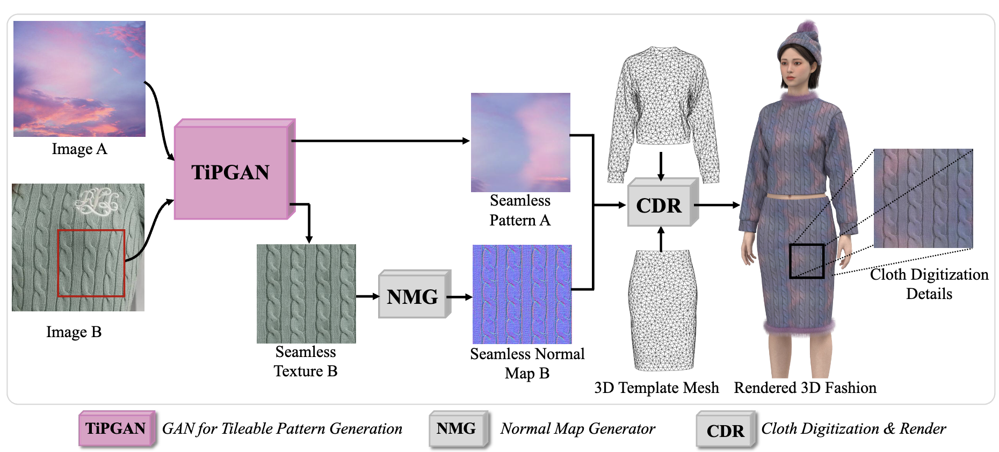
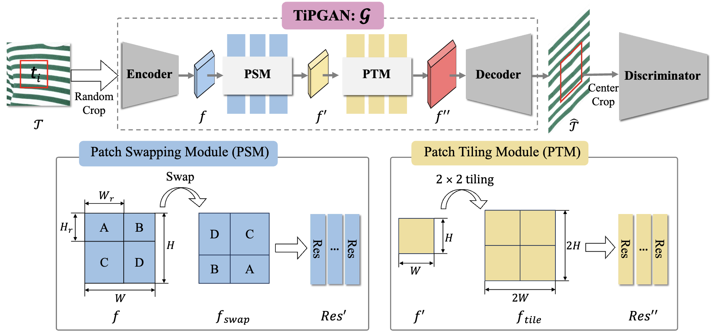
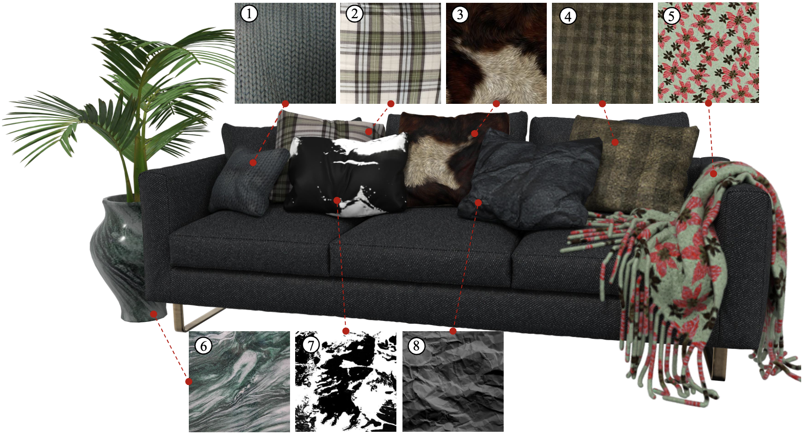
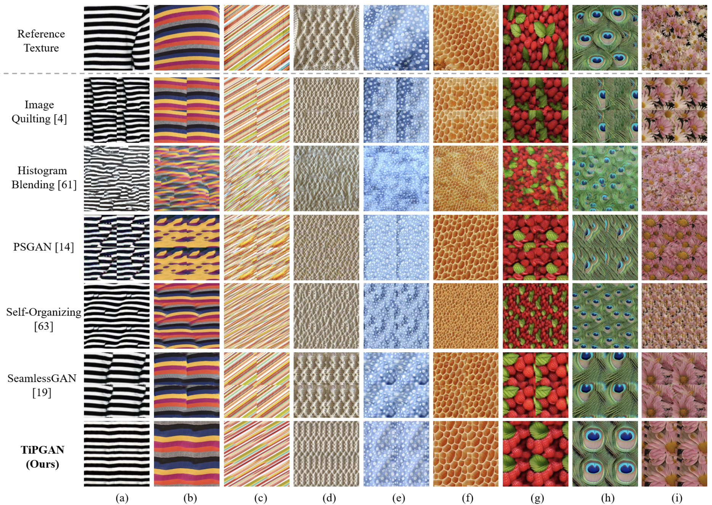
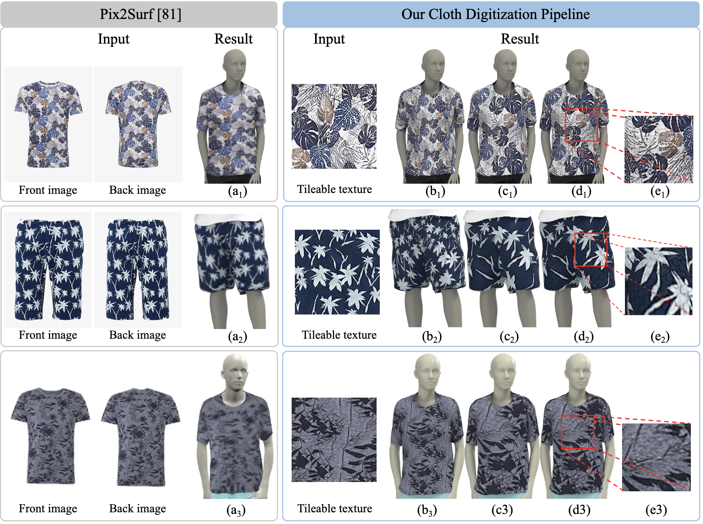
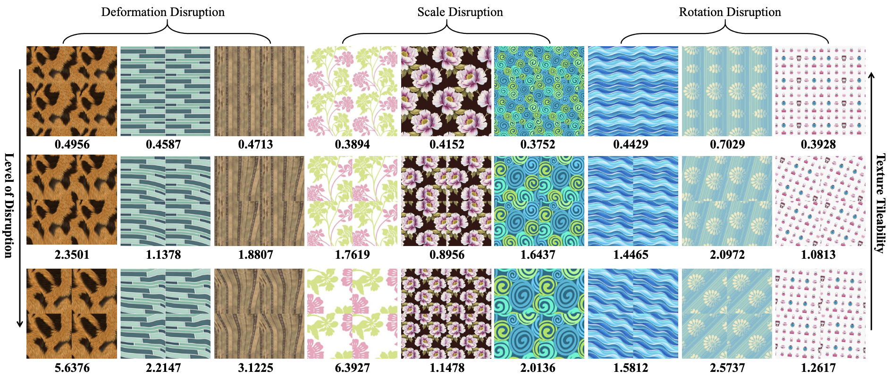

Seamless textures play an important role in 3D modeling, animation, video games, and Augmented Reality/Virtual Reality, enhancing the realism and aesthetics of the digital environments. Despite its significance, generating seamless textures is not trivial, requiring the edges of the synthesized texture image to represent a continuous pattern when tiled. Although traditional methods and deep learning models have made good progress in texture synthesis, they often fail in ensuring the seamless property of the synthesized textures. In this paper, we report on TiPGAN, a Generative Adversarial Network (GAN) model, which we developed to generate seamless textures. Leveraging the inherent intrinsics of seamless textures as priors, our model introduces two novel modules: a Patch Swapping Module, for maintaining texture continuity through diagonal patch swapping, and a Patch Tiling Module, for ensuring seamless repetition across tiles. To overcome the limitations of existing image quality metrics in evaluating tileability, we introduce a new metric, termed Relative Total Variation (RTV), for assessing the smoothness and continuity of the synthesized textures. Our experimental results demonstrate that TiPGAN outperforms existing methods in generating high-quality, seamless textures, as validated by both conventional image quality metrics and our newly proposed RTV metric. This research represents a significant advancement in texture generation, offering valuable applications in graphic design, virtual reality, and digital art.

The seamless textures can be divided into arbitrary \(2 × 2\) patches that preserve their tileability even after being diagonally interchanged.

Realistic 3D seamless texture generation for cloth digitization applications.

Architecture of TiPGAN, including the Patch Swapping Module and Patch Tiling Module.




@article{HE2025103866,
title = {TiPGAN: High-quality tileable textures synthesis with intrinsic priors for cloth digitization applications},
journal = {Computer-Aided Design},
volume = {183},
pages = {103866},
year = {2025},
issn = {0010-4485},
doi = {https://doi.org/10.1016/j.cad.2025.103866},
url = {https://www.sciencedirect.com/science/article/pii/S0010448525000284},
author = {Honghong He and Zhengwentai Sun and Jintu Fan and P. Y. Mok},
}